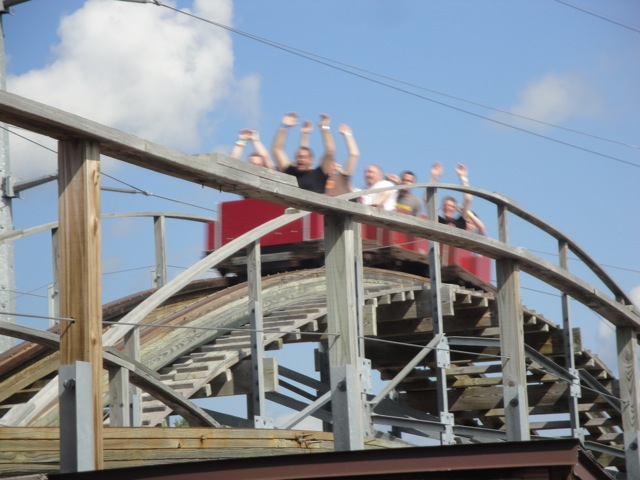
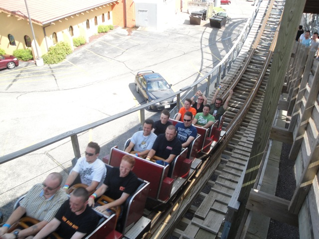
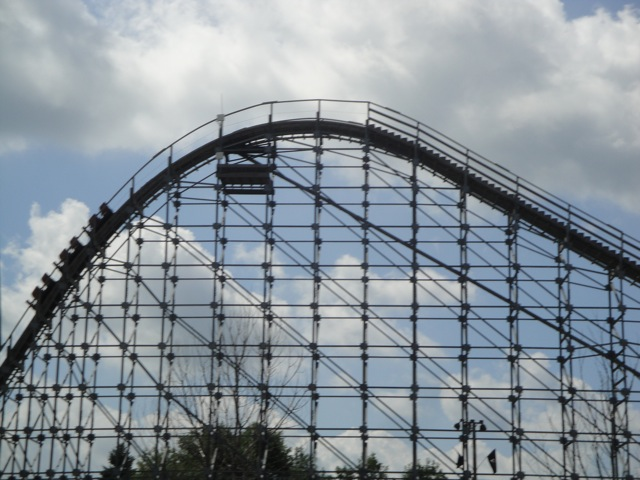
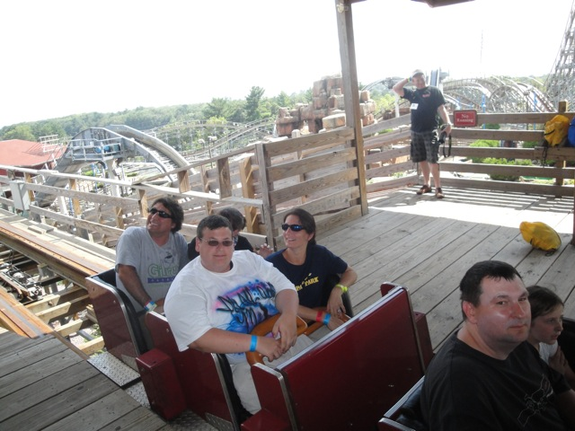
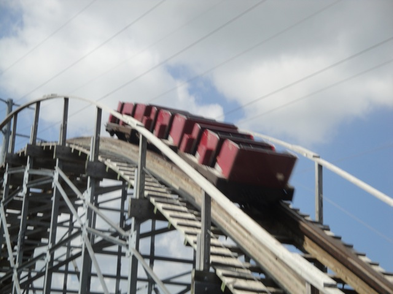

| |

Hellcat Review

Today, we'll be heading back in time where we'll be reviewing HellCat at Timber Falls (Well duh, that was the only reason to go to Timber Falls, but whatever). You first got in, pull down your lap bar, and you were off!!! You rolled down a small dip, and went around a turn. Even this tiny little turn had a few laterals. Yeah, this was foreshadowing the rest of the ride right here. We then climbed up the lift hill. There wasn't much to see other than the Wisconson Dells (not a very pretty place), mini golfers, and if you look closely, you could see Hades 360 @ Mt. Olympus. We then went down the first drop. Man, this thing may not look big, but HOLY CRAP!!! THIS THING PICKED UP QUITE A BIT OF SPEED!!!! We then SLAMMED right into a turn. Yeah. I should warn you. This little ride was mean and agressive. It was not going to slow down and take these turns gracefully. It would've just whipped you through them and it wouldn't have given a rats ass that it slammed you into the side. And this thing was so insane that you wouldn't have cared either. It was just so insane and fun. After that mean turn, we got a nice head chopper ducking right underneath a sign before heading over a small little hill. EJECTOR AIR!!!!!! =) It seriously felt like this thing was just literally flying off the tracks. It was mean, agressive, fast, and batsh*t crazy. And look out!!! Here comes another turn!!!! SLAM!!!!! Right into the seat dividers!!!! Now that we just slammed through an insanely tight turn, what better way to cap it off with some AIRTIME!!!! Floating out of seat, floating back in seat. Yeah. This was awesome. We had another turn coming up ahead, though this one wasn't quite as strong as the others. Oh, there were laterals. There were plently of laterals all right. But there was no slam. But who cares. Another hill is coming which meant...YAY!!!!! We just got airtime!!! =) Time for another tight SMACK!!!!! turn. Yeah. These turns were really freaking aggressive. This ride didn't care about your sides. It would've just smashed you into that seat divider without a care in the world. And it was completely awesome. We came across two more hills. And yeah, you know what was about to happen. This rides formula, while freaking insane, was very easy to predict. Crazy Ejector Air, Crazy Ejector Air, SLAM!!!!! And yeah. Another pop of ejector air, and one last pop and now we came into the final brakes. Holy Crap. This ride was freaking insane. It had some crazy ejector air, and those laterals. Damn. They are not only awesome, but they hurt. Especially when you marathon this ride. After the 6th time around, it can really start to hurt. If you're a fragile coaster enthusiast (A fragile coaster enthusiast would be someone who'd complain how awful and rough a smooth coaster such as the Incredible Hulk or Scream is), you probably probably would've hated this ride. But if you don't mind some roughness, then this ride is freaking amazing. Hold on. It's gonna take you for one hell of a ride. I miss this ride. =(
8/10
Location: Timber Falls
Opened: 2004
Died: 2017
Built by: S&S Power
Last Ridden: August 14, 2010
Hellcat Photos










Home
|